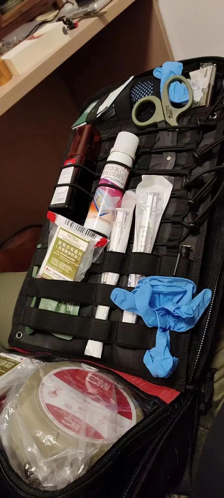
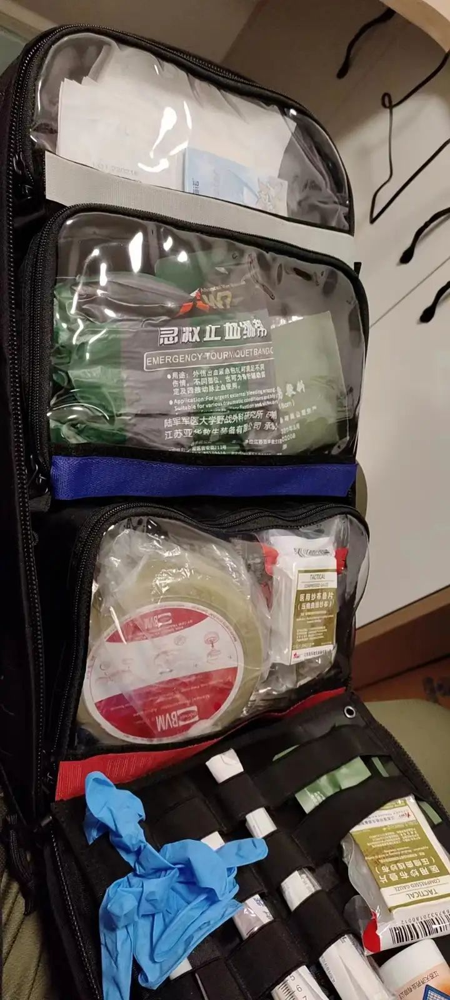

户外急救护理、证书认证体系、课程内容的介绍
(@截止20231031)社会上对于急救证书和体系认可度较为广泛的有：AHA、ERC、WAFA、TECC、BLS、ACLS、PCLS
AHA (American Heart Association)：
美国心脏协会，是一个致力于心血管疾病和中风预防的非营利组织。AHA也提供多种与心肺复苏（CPR）和急救有关的培训和认证。
心肺复苏（CPR）与AED使用：包括如何进行有效的心肺复苏和使用自动体外除颤器（AED）。
急性冠状动脉综合症（ACS）管理：教授如何识别和处理心绞痛、心肌梗死等。
心律失常的识别和处理：包括了解心电图（ECG）和急性心律失常的处理。
急救基础：包括外伤、窒息、中风等紧急情况的初步处理。
高级心血管生命支持（ACLS）：包括多人心肺复苏和高级空气道管理。


ERC (European Resuscitation Council)：欧洲复苏委员会，负责制定和更新欧洲心肺复苏和急救的指导方针。
欧洲心肺复苏指南：熟悉和遵循ERC发布的心肺复苏（CPR）指南。
急性心血管护理：如何管理不稳定的心绞痛、心力衰竭等。
创伤护理：包括车祸、坠落等造成的伤害的紧急处理。
儿童和新生儿急救：针对儿童特有的医疗紧急状况。
WAFA (Wilderness Advanced First Aid)：
野外高级急救证书，专为在偏远地区可能面临的医疗紧急状况提供培训。
偏远地区伤情评估：怎样进行快速全面的评估。
野外止血与包扎：使用即时可用的工具进行急救。
暴露和环境疾病：如何处理低体温、热衰竭等。
高海拔和水下医学：了解高海拔和深水潜水可能导致的健康问题。
TECC (Tactical Emergency Casualty Care)：
战术紧急伤员护理，主要针对执法和军事人员，提供在高风险环境下的医疗救援培训。考试内容主要涉及以下几个方面：
伤情评估和分类：包括了解基本解剖学、掌握快速评估和初步处理受伤患者的技能。
出血和休克管理：包括快速止血、静脉通路建立和营救小组治疗计划等。
呼吸道管理和呼吸支持：包括气管插管、气道管理、呼吸机操作等。
头颈和脊椎外伤处理：包括颅内出血和脊柱损伤等紧急情况的处理方法。
胸部外伤和急性心肺功能障碍处理：包括胸腔创伤处理、肺挫伤的处理方法，以及心脏和肺部发生急性异常时的应急处理方法等。
烧伤和化学损伤的处理：包括知道如何应对烧伤、溅入眼睛或皮肤的化学药品等不同类型的伤害。
BLS (Basic Life Support)：
基础生命支持，是一种主要面向医疗人员和急救人员的初级急救培训。
心肺复苏（CPR）：基础的心肺复苏技术。
AED操作：自动体外除颤器的正确使用。
基础空气道管理：如何清理和维护呼吸道。
休克和流体管理：初步处理休克和流体不足。
ACLS (Advanced Cardiovascular Life Support)：
高级心血管生命支持，是一种针对医疗专业人员的高级急救培训，重点在于心血管疾病和其他复杂紧急医疗情况。
高级心律失常处理：包括药物和电除颤。
急性冠状动脉综合症（ACS）：高级的诊断和治疗方法。
高级呼吸支持：机械通气和其他复杂呼吸支持。
心脏急症处理：识别和处理急性心衰、心包填塞等。
PCLS (Pediatric Advanced Life Support)：
儿科高级生命支持，专为儿科紧急医疗状况提供培训。
儿科心肺复苏：适用于儿童和婴儿的心肺复苏技巧。
儿科药物使用：了解儿科紧急用药。
儿科气道管理：包括儿童特有的气道异物和窒息处理。
儿科创伤和中毒：识别和处理儿童常见的外伤和中毒情况。
社会救援力量之间的区别，背景与历史
@BSR蓝天救援队：成立于北京，总部在北京，但各个城市设有分部，分部之间独立运营，互不干涉
@公羊救援队：一群有经验的民间力量成立的救援队，经过正规注册，官家认证
@公益救援队：有基金会资助的救援队，财力较为雄厚，会接一些商业培训项目
@珠海民安：珠海市民安救援中心前身是珠海市登山协会救援队